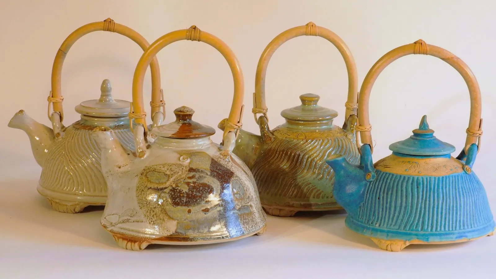
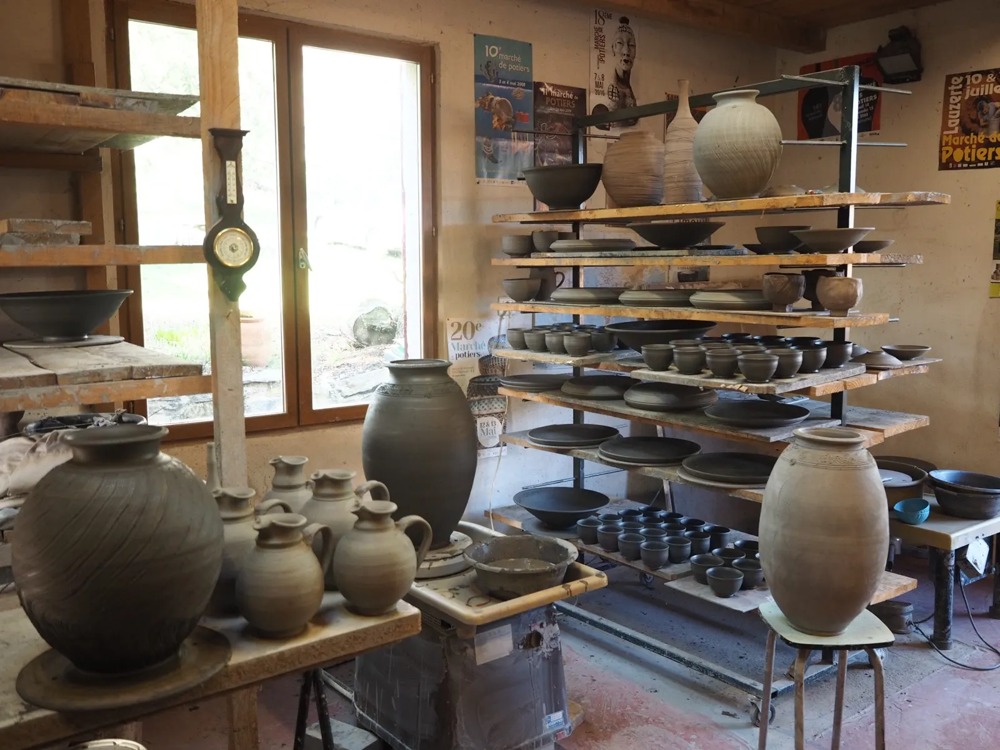
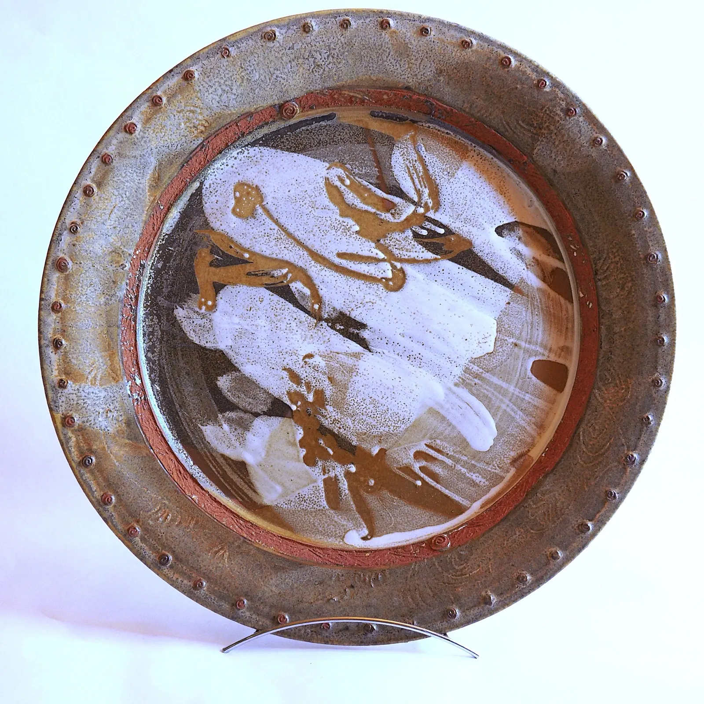
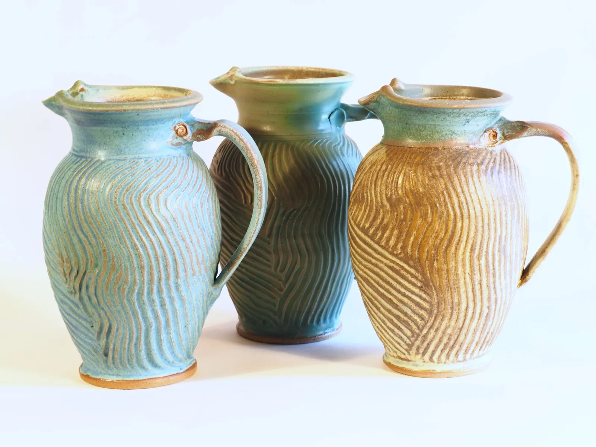
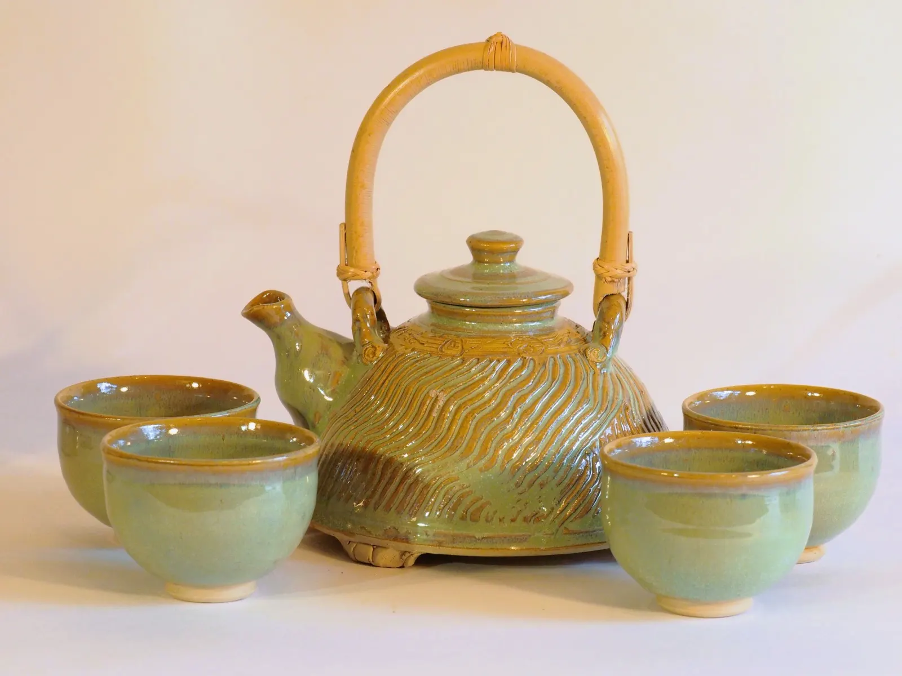
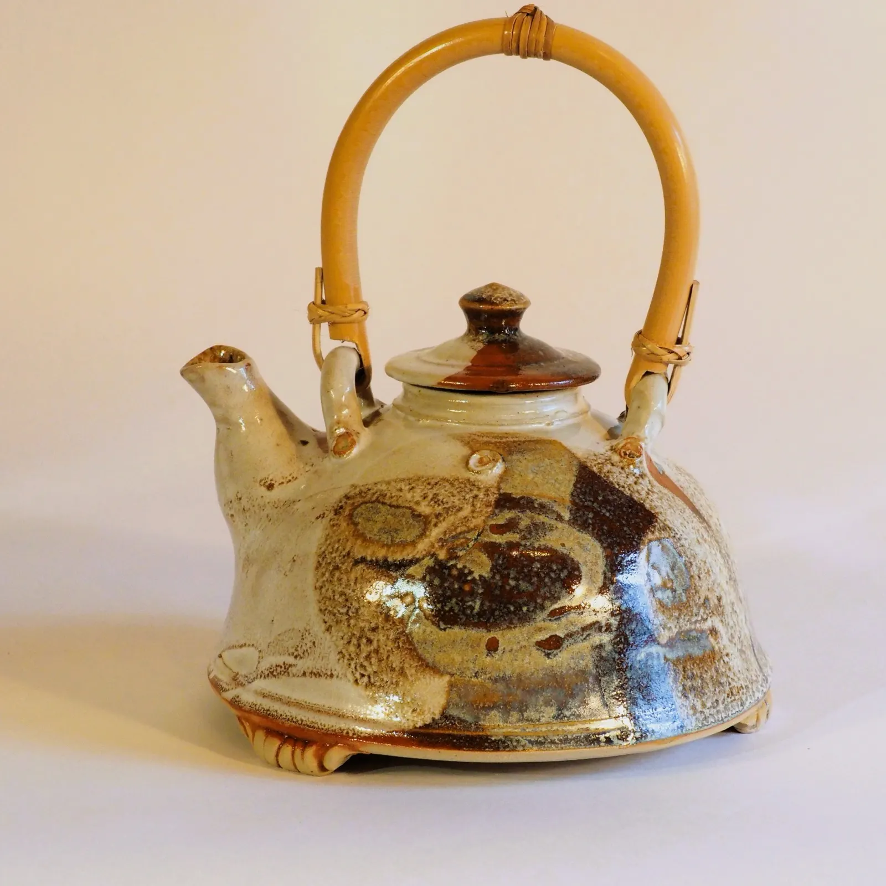

Théières en grès, anses en bambouPotier des gorges du Tarn, chercheur d’émaux.
Installé dans l’Aveyron depuis 1984, Christian Charre tourne le grès à Mostuéjouls, calcule ses propres émaux et cuit à 1300 °C. Il partage ce savoir en stages de 3 à 5 jours, à l’atelier.
- 1984installé dans l’Aveyron
- 1300 °Ccuissons haute température
- CNIFOPformé à Saint-Amand-en-Puisaye
- 3 à 4stagiaires par stage
Stages de poterie à l’atelier
Du tour aux émaux, des stages en petit groupe pour apprendre les gestes et comprendre la matière.
- 3 stagiaires au minimum, 4 au maximum
- Du lundi au vendredi, de 9 h à 12 h et de 14 h à 17 h
- L’argile et les pièces réalisées sont comprises
- Cuissons, biscuit et émaillage en plus, selon la taille des pièces

L’atelier, à MostuéjoulsTournage5 jours
380 €Maîtrise du centrage et des étapes du tournage.
Tournage initiation3 jours
250 €Pour les débutants : les gestes essentiels pour aborder le tournage.
Tournage perfectionnement3 jours
280 €Émaillage et cuissons haute température5 jours, cuissons à 1300 °C
400 €Calcul molaire de l’émail, essais de glaçure et cuissons.
Stage découverte3 jours
250 €Tournage, travail à la plaque, colombins, modelage.
À l’heure ou à la journée
- Cours particulier 25 € de l’heure
- Carnet de 10 cours 300 €
- Journée d’initiation, de 2 à 4 personnes 90 €
Pour les cours, les jours et les horaires se voient directement avec Christian.
Indiquez le stage qui vous intéresse : Christian valide votre inscription par retour de mail.
« Un travail acharné et un goût pour la recherche me permettent aujourd’hui une production personnalisée. »
Une première formation scientifique à l’INSA de Lyon, puis un DUT de génie climatique en 1983, lui donnent les bases pour aborder le calcul de l’émail.
Autodidacte, il se forme ensuite au CNIFOP, avec deux stages, émail et tournage de grosses pièces, et auprès de potiers confirmés. Depuis 2004, il poursuit ses recherches sur les émaux de haute température.



Des voyages qui ont tous laissé des traces dans son travail
Mali, Burkina Faso, Maroc, Tunisie et l’Asie du Sud-Est.
Très tôt, une rencontre avec l’argile, des voyages au Maghreb et une attirance pour les formes et la couleur l’ont conduit au métier de potier. Il est membre de l’association Teranga depuis 1990.
Le goût de la pédagogie l’a conduit à partager ce qu’il a appris, en stages à l’atelier. Passionné de musique, il donne aussi des cours de percussions.
Un atelier au bord du Tarn
À Mostuéjouls, à l’entrée des gorges du Tarn, tout près de la rivière et des campings. L’atelier occupe un bâtiment neuf dans un grand parc ombragé : plusieurs tours, un four à gaz, un four électrique.
Pour dormir sur place pendant un stage, les nombreux hébergements des environs sont recensés par l’office de tourisme de Rivière-sur-Tarn. Le Tarn, tout proche, offre d’agréables baignades.

Où trouver ses pièces
- La yourte, à MostuéjoulsLieu de vente et d’exposition près de l’atelier, ouvert d’avril à octobre, sur rendez-vous.
- La boutique du Rozier (48)Ouverte tous les jours en juillet et en août.
- Espace Métiers d’art, MillauBoutique associative : ses pièces y sont toute l’année.
- Marchés de potiersTout au long de l’année, partout en France.
- Salons d’artisanat d’artEn fin d’année, quelques salons régionaux.
Un stage, une pièce, une visite de la yourte ?
Le plus simple est d’appeler Christian ou de lui écrire par le formulaire de contact.
- Atelier
- 99 route de Therondel
12720 Mostuéjouls - Téléphone
- 06 84 42 21 79